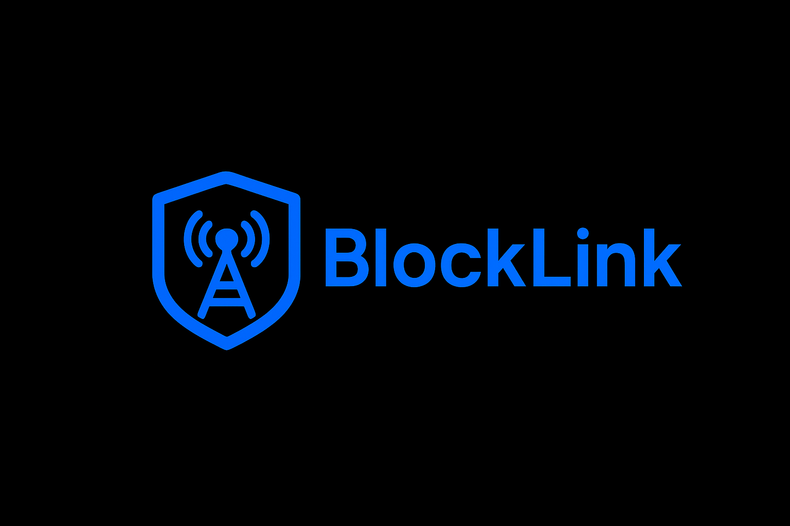

Новости 6 марта 2026
BlockLink: виртуальные сети для приватного общения
Знакомьтесь: BlockLink — технология создания изолированных виртуальных сетей для каждого чата. Прямое P2P-соединение без настроек роутера.